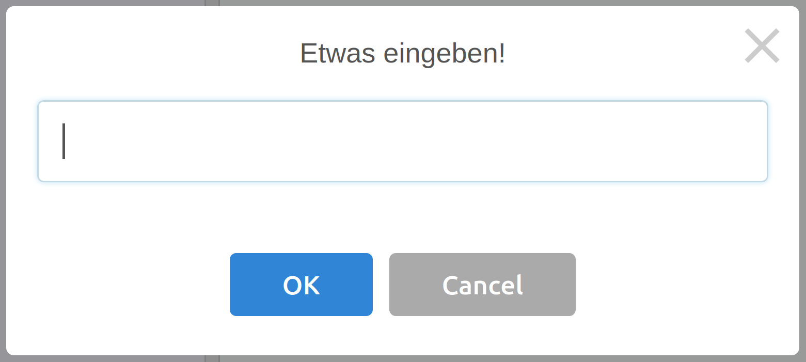

Eingabe von Werten
Mit Variablen haben wir unsere Programme bereits flexibler gemacht. Jedoch möchten wir noch, dass der Benutzer des Programms, jedes Mal andere Variablenwerte verwenden kann.
In diesem Kapitel sehen wir uns an, wie Benutzer Werte für Variablen eingeben können.
Eingabe mit der input Funktion
Bevor wir den Benutzer nach einem Wert für eine Variable fragen, müssen wir uns Gedanken machen, welchen Typ die Variable haben soll. Der Benutzer kann über die Tastatur beliebige Texte eingeben, also ist die Benutzereingabe zunächst immer vom Typ String.
Möchten wir etwas anderes als einen String, also einen Integer (Ganzzahl)
oder einen Float (Gleitkommazahl), so müssen wir den Wert in den richtigen Typ umwandeln.
Hierfür gibt es die beiden Funktionen int() und float().
Es gibt also drei Möglichkeiten um eine Eingabe vom Benutzer zu erhalten:
x = input("Etwas eingeben!")- um String (Text) Werte einzulesenx = int(input("Etwas eingeben!"))- um Integer (Ganzzahl) Werte einzulesenx = float(input("Etwas eingeben!"))- um Float (Gleitkommazahl) Werte einzulesen
Auf der linken Seite des Zeichens = steht der Name der Variablen,
der ein neuer Wert zugewiesen werden soll.
Auf der rechten Seite hatten wir bis jetzt immer einen fixen Wert.
Statt dem fixen Wert steht jetzt der Funktionsaufruf von input mit einem Argument.
Das Argument ist der Text der dem Benutzer angezeigt wird,
wenn er einen Wert eingeben soll.
Bei der Eingabe von Integer oder Float Werten, wird um den
Funktionsaufruf von input herum, die Funktion int bzw. die Funktion
float geschrieben um den String in Integer bzw. Float umzuwandeln.
In den ersten Kapiteln beschäftigen wir uns ausschließlich mit den beiden Typen Integer und Float. Für Strings gibt es später ein eigenes Kapitel.
In der folgenden Abbildung ist das Eingabefenster zu sehen:

Wichtig: Falls der Benutzer keine Zahl eingibt und
wir versuchen dennoch den String mit int oder float
umzuwandeln, stürzt das Programm mit einer Fehlermeldung ab.
Im Kapitel über Strings werden wir dieses Problem beheben.
Bis dahin müssen wir davon ausgehen, dass der Benutzer nur gültige Werte eingibt.
Übungen
📝 Übung 11
Schreibe ein Programm, welches ein gleichseitiges Dreieck zeichnet. Die Länge a des Dreiecks soll der Benutzer selbst eingeben. Der Typ der Eingabe soll Float sein, damit der Benutzer beispielsweise 20.5 eingeben kann.
📝 Übung 12
Schreibe ein Programm, welches ein Haus zeichnet. Die Höhe des Hauses soll vom Benutzer eingegeben werden können. Im folgenden Bild siehst du drei mögliche Ergebnisse. Je nachdem welchen Wert der Benutzer eingibt, kommt ein anderes Haus dabei raus.
📝 Übung 13
Erweitere das Programm von Übung 12 um eine weitere Eingabe. Der Benutzer soll zusätzlich die Größe der Fenster eingeben können.
🧭 Zusammenfassung
Unsere Programme können nun Zahlenwerte als Eingabe vom Benutzer entgegennehmen.
Hierzu nutzen sie die Funktionen inputInt und inputFloat.
Dadurch sind die Programme flexibler einsetzbar.